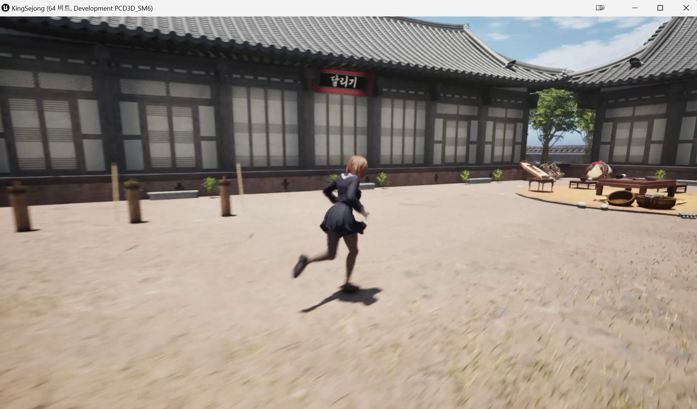
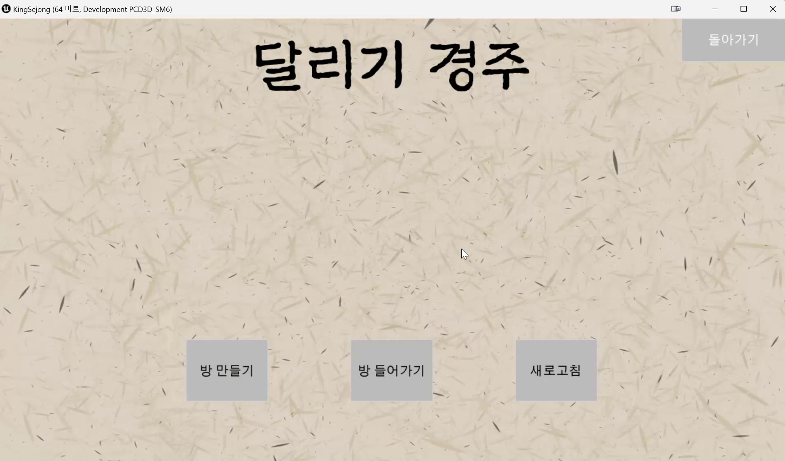
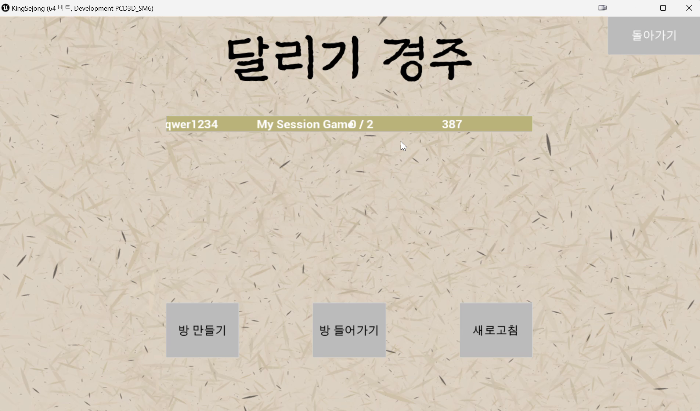
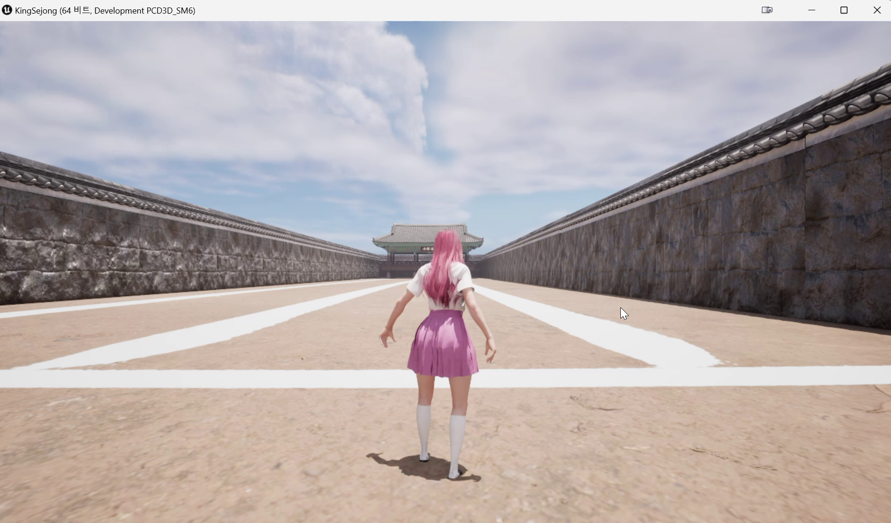
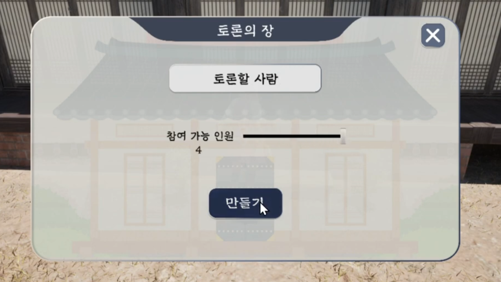
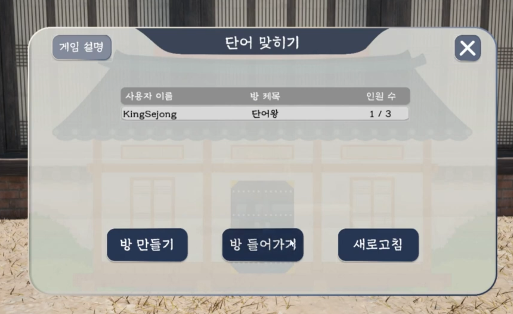
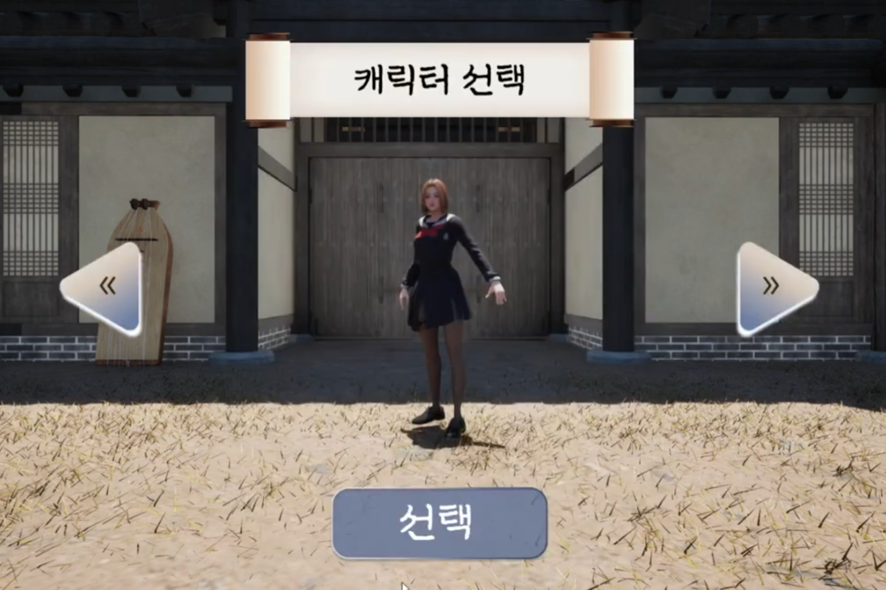
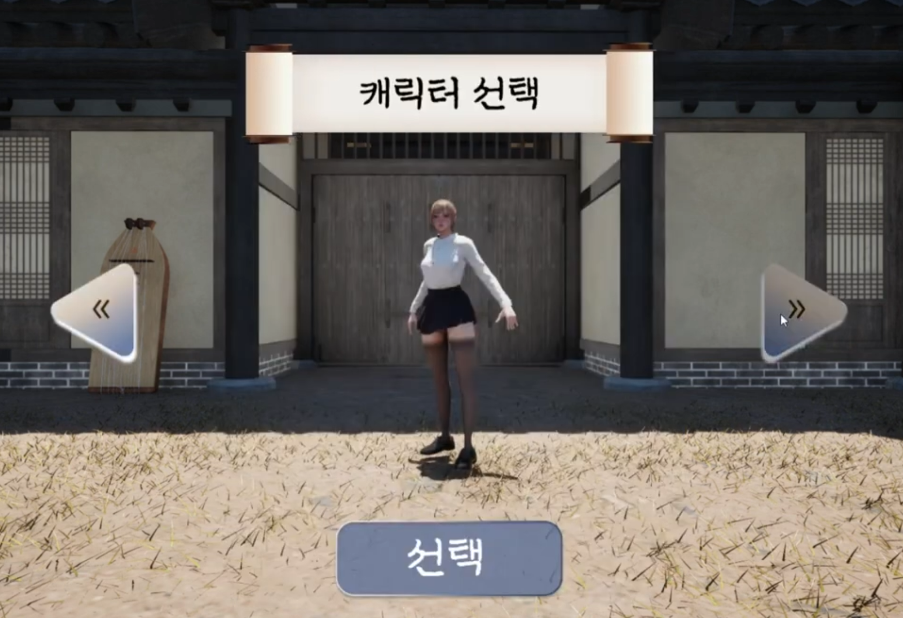

프로젝트 세종대왕
한옥 마을에서 여럿이 모여 노는 멀티플레이 미니게임 모음입니다. 저는 로비에서 게임 맵까지 들어가는 길 전체를 맡았습니다.
- 장르
- 멀티플레이 미니게임
- 엔진 · 언어
- Unreal Engine 5 · C++ · Blueprint
- 규모
- 5인 팀
- 담당
- 세션 · 트래블 · 로비 UI
어떤 게임인가
플레이어가 방을 만들거나 찾아 들어가면 달리기 · 대전 · 대화 세 종류의 맵 중 하나로 함께 이동합니다. 달리기 경주에서는 결승선을 먼저 통과한 순서가 집계됩니다.
제가 만든 것은 게임 콘텐츠가 아니라 거기까지 도달하는 흐름입니다 — 세션을 만들고, 찾고, 참가하고, 모두가 같은 맵에 들어가고, 문제가 생기면 로비로 되돌아오는 길.
카테고리가 셋이지만 세션 구조는 하나로 통합했습니다.

기능 01
세션 생성 · 검색 · 참가
개발 중에는 LAN으로, Steam 환경에서는 Steam 세션으로 같은 코드가 동작합니다.
구현
IOnlineSessionInterface를UJJH_GameInstance에 보관하고, 생성 · 검색 · 참가 · 파괴 완료 델리게이트를 등록했습니다.Category,Room_Name,Host_Name, 최대 인원을 세션 광고 설정값으로 등록하고, 검색 결과에서 읽어 로비 표시용roomInfo구조체로 변환합니다.- LAN 여부는 활성 Subsystem 이름으로 판정합니다 —
bIsLANMatch = GetSubsystemName() == "NULL". 같은 코드가 개발 단계에서는 LAN, Steam 환경에서는 Steam 세션으로 돕니다.
화면

Development PCD3D_SM6가 개발 빌드입니다.
어려움
- 문제
- 한글로 지은 방 이름이 Steam 세션에서 제대로 돌아오지 않았습니다. 로컬 LAN에서는 멀쩡한데 Steam을 거치면 검색 결과의 방 이름이 깨졌습니다.
- 원인
- 세션 광고 설정값은 Steam 서버를 거쳐 저장·전달됩니다. 그 경로에서 비ASCII 문자열이 안정적으로 보존된다는 보장이 없습니다.
- 해결
- 방 이름을 Base64로 인코딩해 등록하고, 검색 결과를 표시할 때 디코딩하도록 바꿨습니다. 광고값에는 항상 ASCII만 올라가므로 경로와 무관하게 같은 문자열이 돌아옵니다.
성과
LAN · Steam 자동 판정
한글 방 이름 정상 표시
카테고리 3종을 세션 구조 하나로 통합
기능 02
맵 진입과 로비 복귀
참가에 성공했다는 것과 맵에 들어갔다는 것은 다른 사건입니다.
구현
- 호스트는 세션 생성 성공 후
ServerTravel로 listen server 맵을 엽니다. 카테고리에 따라Run/Battle/Talk맵으로 분기합니다. - 클라이언트는
JoinSession결과에서GetResolvedConnectString으로 접속 주소를 얻어ClientTravel(TRAVEL_Absolute)합니다. - 세션 퇴장은 서버 RPC · Multicast RPC · Client RPC를 역할별로 나눠 모든 플레이어가 같은 로비 복귀 경로를 타게 했습니다.
화면

어려움
- 문제
- 호스트가 나가면 클라이언트가 아무 화면에도 속하지 못한 채 남았습니다. 연결이 끊겼는데 로비로도 돌아오지 못하는 상태였습니다.
- 원인
JoinSession성공을 “맵에 들어간 것”과 같은 사건으로 다뤘기 때문입니다. 참가 성공은 접속 주소를 얻었다는 뜻일 뿐이고, 그 뒤 트래블·연결 유지는 별개로 실패할 수 있습니다.- 해결
- 두 단계를 분리해 각각의 실패를 따로 다뤘습니다. 호스트 종료나 연결 실패는
OnNetworkFailure콜백에서 감지해 클라이언트를 로비로 되돌립니다. 어느 단계에서 끊겼는지 추적할 수 있게 된 것이 부수 효과입니다.
성과
호스트 이탈 시 클라이언트 고립 제거
실패 지점을 단계별로 추적 가능
기능 03
로비 UI와 캐릭터 선택
방 만들기 · 방 찾기 · 캐릭터 선택을 한 위젯 안에서 전환합니다.
구현
WidgetSwitcher로 방 만들기 · 방 찾기 · 캐릭터 선택 화면을 전환합니다.- 슬라이더로 최대 인원을 실시간 조절하고, 그 값이 세션 생성 파라미터와 UI 텍스트에 동시에 반영됩니다.
- 검색 완료 델리게이트에서 결과 배열을 받아 스크롤박스에 방 슬롯 위젯을 동적으로 생성합니다.
화면




어려움
- 문제
- 검색 목록에서 이미 꽉 찼거나 시작된 방에도 참가를 누를 수 있었습니다. 눌러도 실패로 돌아올 뿐이라 사용자 입장에서는 이유를 알 수 없었습니다.
- 원인
- 목록이 세션 광고값을 보여주기만 하고 그 값으로 조작 가능 여부를 판단하지는 않았기 때문입니다.
- 해결
- 슬롯 위젯이 인원과 시작 여부를 읽어 입장 버튼 자체를 비활성화하도록 했습니다. 실패할 요청을 보내기 전에 막습니다.
성과
잘못된 참가 요청 사전 차단
검색 결과 수만큼 슬롯 동적 생성
범위와 한계
5인 팀 프로젝트이며 제 담당은 세션·트래블·로비 UI입니다.
대전 맵(HJS)과 커뮤니티 맵(KJH)의 콘텐츠는 팀원이 만들었고,
저는 그 맵들로 들어가는 경로를 하나의 세션 구조로 통합했습니다.
Steam 환경은 Subsystem 판정과 세션 설정까지 구성했으나, 실제 상용 배포는 하지 않았습니다.